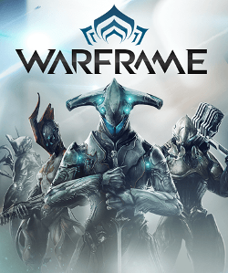
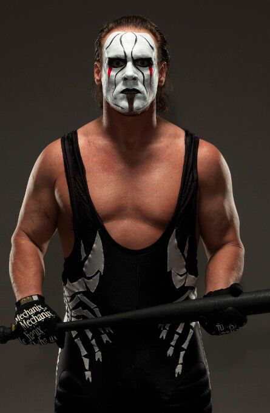
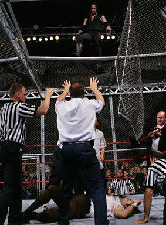
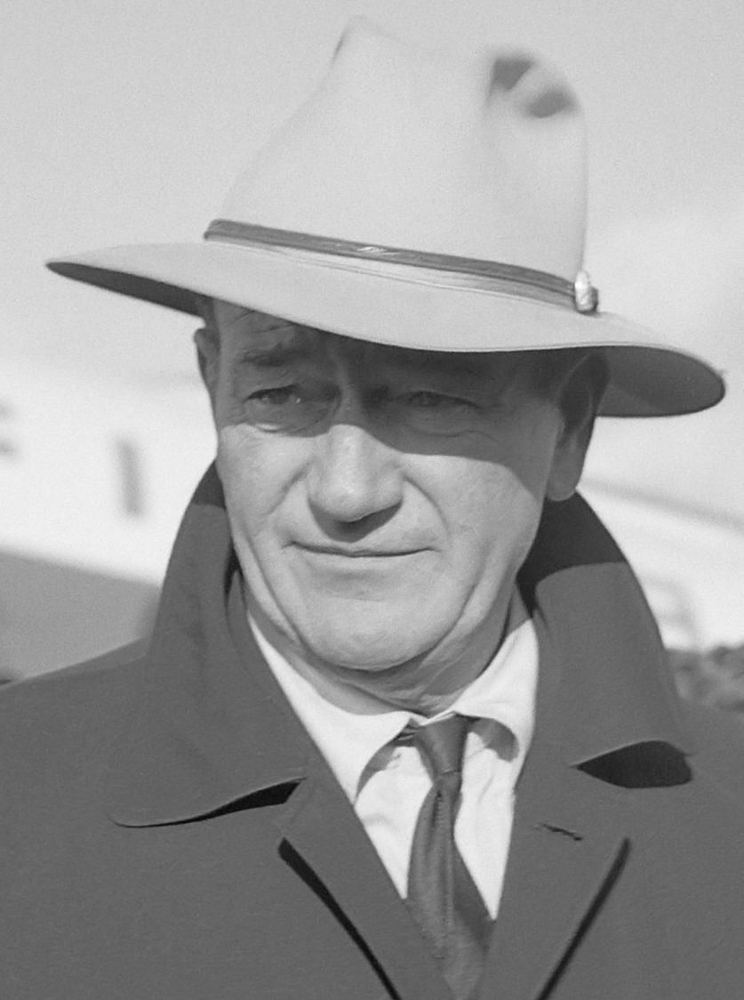
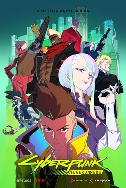

Week 1
In my free time I often help moderate a Twitch stream whenever they are live and for the past couple weeks they have been obsessed with the songs and music from Epic: the Musical which has ended up stuck in my head and sent me down a rabbit hole of watching different animations people have made for the music or watching people react to said videos. I always found mythology interesting especially that of Ancient Greek and Egyptian as they often have rather interesting and unique characters that have allowed people to create all types of different interpretations and stories around them such as Assassins Creed Origins, Assassins Creed Odyssey, and God of War Ragnarök just to name a few.
Thunder Bringer itself I feel is another one of these as it gives a great retelling of one of the major events in the Odyssey of th aftermath of when Odysseus's crew kills Helios's sacred cows. While in the traditional telling of the story Eurylochus persuades the crew to kill them while Odysseus is sleeping and results in the gods killing the rest of his crew and ships in a storm, Jorge chooses to have the gods play more of an active role in it by having Zeus himself appear and giving a Odysseus a choice in the matter of what happens. This change along some other things like how Telemachus fighting Antinous, one of the suitors, while his father is still lost at sea, provides a unique and different retelling of a story that has been round for thousands of years. It also shows how different stories can be evolved and changed over time to make a unique experience for people to enjoy.
Week 2

The Vanquishing of the Witch Baba Yaga is quite different to movies and shows I've watched or games that I've played as it really just shows different communities and experiences of people living in different parts of Eastern Europe which is broken up by telling parts of a fairy tale in the form of this sort of animations about the Baba Yaga. The only things I could think of that are somewhat similar in a sense are games like those of Assassin's Creed III, and Assassin's Creed Unity where, while not really historically accurate since you are playing as a fictional role of an assassin in these different eras of history the games do include historical events, such as the storming of the Bastille, and information about these events that the player can read about and blends this fictional story into these historical events events to allow a somewhat documentary of sorts to the games. Both of these games were some of the first video games I remember playing and is part as to why I like learning random bits and pieces about history and mythology as, while not likely the best teachers of history, I feel give a relatively decent recreation of what the time/ experience might've been like for people living in there respective time periods.
Week 3

Faces Places followed Agnes Varda and JR on a trip around France and interacting with different people, and community and seeing how different yet the same people can be yet share common feelings and see how art can impact people and reminded me of one gaming community that I feel also embraces this and that is of Warframe. While often times communities in gaming can be rather toxic in general, Warframe I feel is somewhat a diamond in the rough as in my experience I've never really had any bad experiences with it. In addition to this it has so much content that people can play the game in so many different ways whether it be someone who enjoys playing just to make their character look as cool as possible, you like making your warframes as powerful as possible, or just playing something goofy like making a warframe that is as fast as possible just because you can. Additionally, the developers of the game are rather open with the community and as they usually stream once a week where they play with the community, short dev streams where they talk about things that they've been doing that week, along with occasional Dev streams where they announce things such as when new major updates come out in addition to always giving out stuff to the community including things such as the premium currency for the game and generally just being generous and kind to the community.
Week 4

JCVD was a rather interesting film and got me thinking about other actors and such who put there bodies on the line for roles and jobs and with knowing we're talking about pro wrestling and Ric Flair in a few weeks a lot of wrestlers started coming to mind people such as Ric Flair, The Undertaker, Triple H, The Hardy Boyz, Edge, Sting, and Mick Foley are all names that came to mind. While many people often say "Pro Wrestling is faking" while yes parts of it are often times fake such as the rivalries and store lines told through out them in addition to often time the punches and kicks thrown in the ring. However, many of the bumps wrestlers take in matches weather it being hit with a steel chairs, stairs, or similar, while often times planned, are still very real. Many of the wrestlers I named above, while most have retired from wrestling, having being doing it/ did it for many years with Sting having just retired in March 2024 after having wrestled since 1985 (39 years) and at age 65 it is wild to consider someone at that age still willing to go out into a ring go out there and put there body on the line in as intense job as being a pro wrestler. Undertaker also had a very long career (1990-2020) and filled with some rather intense matches one that sticks out in particular is from King of the Ring 1998 where Undertaker and Mick Foley faced off in Hell in a Cell.

The match itself was itself is rather iconic and also quit fitting due to the moment portrayed of when Undertaker choked slammed Mick Foley through the steel cage. While the choke slam was planned it and Mick Foley was supposed to go through the cage roof except not in the fashion he did and Mick Foley ended up with many injuries from this match including a concussion, a dislocated jaw and shoulder, bruised ribs, internal bleeding, puncture wounds,and having several teeth knocked out. This match lead to Mick Foley considering retiring but continued to wrestle until 2012 but did not do as matches as intense with his character Mankind.
Week 5

{kind=link}
With last weeks screening of JCVD and this weeks screening of the two Deadwood episodes it really got me thinking about one thing, John Wayne. While I feel most people my age have probably never heard of him it was a semi-regular name in my house growing up as my dad loved watching old western films and John Wayne's were pretty often among them. My dad and I would often watch his films such as The Sons of Katie Elder, El Dorado, and True Grit are all ones that come to mind. Wayne was one of the biggest movie stars of his time and to think in 1976, when he was 69 years old, he was still going out and making western movies where, while maybe not as physically demanding as some of Jean-Claude Van Dame's films, are still somewhat demanding especially for someone at his age at the time.
Week 6

Sambizanga while I was a bit confused with the story and plot of the film as in the beginning it wasn't very clear up until about the last 45 minutes or so of it I reminded me a lot of when I watched Cyberpunk Edgerunners. While vastly different in terms of the story and style I feel as though both of them have a very common themes/ features with those being:
- Corrupt societies from which the main characters seek escape
- Exploration of power dynamics and social inequality
- Characters driven by a desire for change or freedom
- Both end in a rather sad and unfortunate way
While it maybe was not as obvious at times in Sambinazga that these themes were present as it was never really super apparent, at least to me, that Xavier was working with the revolutionaries after later thought it became more clear and showed the escape that they were trying to achieve. In Edgerunners it is a more clear as the protagonist David grew up poor and after meeting Maine, Lucy, and the rest of there crew he is able to become one of the top edgerunners in Night City and while he isn't able to escape Night City himself he is able to give Lucy her dream of going to the moon.